1Dinamikus tömbök
Feladat: határozzuk meg egy tetszőleges sokszög területét.
Sokszor a program írásakor nem, de a feldolgozás előtt közvetlenül már ismerjük a szükséges memória méretét. Az ilyen feladat megoldható dinamikusan foglalt tömb segítségével: pl. egy sokszög csúcsainak tárolása. A fenti feladat megoldása egy konvex sokszögre, amelynek ismerjük a koordinátáit:
- Bekérjük a felhasználótól az oldalak számát.
- Lefoglalunk egy megfelelő méretű koordinátatömböt és beolvassuk a csúcsokat.
- Keresünk egy belső pontot a sokszögben (pl. súlypont).
- Háromszögekre osztjuk a sokszöget, kiszámoljuk és összegezzük azok területét.
- Felszabadítjuk a tömböt.
Pont *csucsok; csucsok = (Pont*) malloc(sizeof(Pont)*6); csucsok[5].x = 12; csucsok[5].y = 17; /* .... */ free(csucsok);
A tömbök előnye: gyors, közvetlen adatelérés. Az elemeket tetszőleges sorrendben, közvetlen címzéssel érjük el, hiszen közvetlenül egymás mellett helyezkednek el a memóriában. Ezt gyakran ki is használjuk, pl. bináris keresésnél „ugrálunk” a tömbben.
A tömbök hátránya: lassú az átméretezés. Mivel feltétlenül egymás mellett kell, hogy legyenek az elemek, ha változtatni akarjuk a tömb méretét, újra kell foglalni a memóriaterületet. Ennek lépései: (I.) Le kell foglalni másutt a szükséges méretű területet, (II.) Át kell másolni az elemeket a régi helyről, (III.) Fel kell szabadítani a régi tömböt. A tömbök dinamikus nyújtása ezért nagyon költséges művelet. Ráadásul másolás közben az eredeti tartalom kétszer szerepel a memóriában!
Feladat: kezeljük az egy szerverre bejelentkezett felhasználók listáját!
- Nem tudhatjuk, hogy hányan akarnak majd bejelentkezni hozzánk.
- A felhasználók száma folyamatosan változik.
Ideális megoldás lenne: minden belépéskor csak az új felhasználónak megfelelő területet foglalni. Ezzel az a probléma, hogy a memóriában elszórva helyezkednek el az adatok. Valahogyan nyilván kellene tartani, hogy hol vannak az egyes elemek! Ha ehhez pointerek tömbjét használnánk, akkor az lesz az, amit folyton át kell méretezni – vagyis visszakapnánk az eredeti probémát.
Ötlet: az egyes elemek tárolják az őket követő elem címét! Így minden elem egyesével foglalható. Minden elem adatát kiegészítjük egy mutatóval, ami ugyan plusz költség, de egy olyan adatszerkezetet kapunk, amire teljesül, hogy
- tetszőleges méretűre bővíthető dinamikusan,
- új elem hozzáadásának a költsége nagyon kicsi,
- elemek törlése is olcsó művelet.
Vegyük észre, hogy minderre a dinamikus memóriakezelés ad lehetőséget: egy olyan adatszerkezetet készülünk most létrehozni, amelyben az egyes elemek külön jönnek létre, és külön szűnhetnek meg. Nem csak az összes tárolt adat élettartamát fogjuk kontrollálni egyszerre, mint a dinamikus tömbnél, hanem az egyes elemekét külön-külön is!
2A láncolható elem
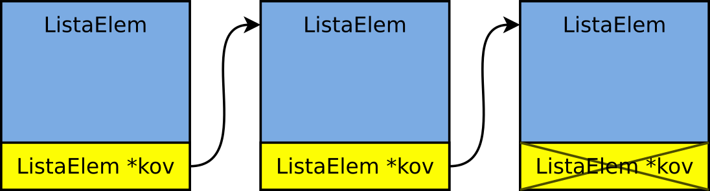Láncolt lista (linked list): adatszerkezet, ahol az egyes elemek láncba vannak fűzve azáltal, hogy tárolják a soron következő elem címét.
Nyelvi szinten egy láncolt listába fűzhető elem önhivatkozó struktúrával írható le:
struktúra:
pointerrel!
typedef struct ListaElem {
… // tetszőleges adat(ok)
struct ListaElem *kov;
} ListaElem;
Fontos: az önhivatkozás csak mutató segítségével oldható meg. Egy adattag típusa nem egyezhet meg a strukúrával, amiben szerepel, hiszen akkor egy végtelen nagyságú adatszerkezetet kapnánk!
Figyeljük meg, hogy typedef segítségével ugyan létrehozunk egy rövidebb nevet, a
struktúrán belül muszáj használni a struct kulcsszót, hiszen ott még nem
létezik az alternatív név. Bár általában, ha typedef segítségével definiálunk
struktúrát, akkor a struct kulcsszó mellett elhagyható a név, itt ez nem tehető
meg az önhivatkozás miatt.
3A lista nyilvántartása
A lista első elemének címét kell eltárolnunk: ettől elindulva a teljes adatszerkezet bejárható.
Így a lista olyan, mintha az elemei egy madzagra lennének felfűzve.
Az utolsó elemben lévő cím NULL: ezzel a
speciális értékkel jelezzük, hogy nincsen további elem a listában.
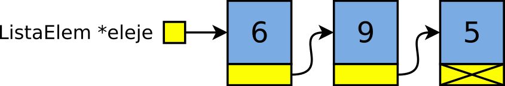
- elem címe:
eleje - elem címe:
eleje->kov(*eleje).kov - elem címe:
eleje->kov->kov(*(*eleje).kov).kov - elem címe:
eleje->kov->kov->kov(ami ittNULL) - …
Ne feledjük: eleje->kov ugyanazt jelenti, mint
(*eleje).kov. Az eleje pointer által mutatott struktúra kov
adattagja. A -> nyíl operátort azért találták ki, hogy ne kelljen mindig
zárójelezni az ilyen kifejezéseket. De ez nagyon kényelmes is: a nyíl emlékeztet a pointerre!
4A lista bejárása (traversing the list)
A listán ciklussal tudunk végigmenni:
ListaElem *mozgo;
for (mozgo = eleje; mozgo != NULL; mozgo = mozgo->kov) {
printf("%d", mozgo->szam);
}
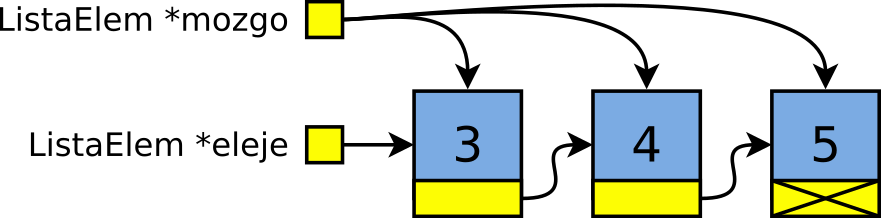
Nincs új a nap alatt: for (első; meddig; következő).
Az első itt a lista eleje: mozgo=eleje.
A meddig itt a NULL pointerig: mozgo != NULL.
A következő az aktuális elem által mutatott: mozgo=mozgo->kov
Láncolt listák – listaműveletek
papír, ceruza, radír!
A következőkben a láncolt listák kezelésének algoritmusairól lesz szó. A
listák kezelése közben szinte minden művelet valamilyen pointerművelet; az összes algoritmus a
listák láncolását állítja be. Van olyan eset, ahol négy pointert is át kell állítani, megfelelő
sorrendben. Ezeket nem szabad magolva tanulni! Azt kell megérteni, hogy mit jelent a lista
láncolása, és hogy egy adott listaművelet előtt és után hogyan kellene kinéznie a láncolásnak.
Egy rajz alapján a programok nagyon könnyen megalkothatóak! A tervezés és a tanulás ezért a
javaslatunk szerint papíron történik! Minden malloc() után egy dobozt kell
rajzolni, minden free() után egy dobozt kiradírozni. Minden pointerértékadás egy
nyíl megrajzolását jelenti. Ha papíron megy, utána kódban is könnyedén menni fog!
6Listaépítés – beszúrás a lista elejére
ListaElem *uj; uj = (ListaElem*) malloc(sizeof(ListaElem)); // 1 uj->kov = eleje; // 2 eleje = uj; // 3
- Új elem dinamikus lefoglalása
- Az új elem „következő” pointerének beállítása az „eleje” értékére.
- Az „eleje” pointer beállítása az új elem címére
Ha az „eleje” mutató kezdetben NULL, a fenti kód akkor is egy teljes listát helyesen épít fel a teljesen ürestől indulva.
7Listaépítés – beszúrás előre, függvénnyel
Írjuk meg az előző feladatot függvényként! A függvény vegye át paraméterként a lista eleje mutatót, és a beszúrandó adatot! Például:

ListaElem *eleje = NULL; elore_beszur(eleje, 2); // működhet ez???
Működhet ez így? Garantáltan nem! C-ben érték szerinti paraméterátadás van.
Ha a függvény első paramétereként átadjuk az „eleje” mutatót, akkor annak csak az értékét
fogja megkapni, másolatként. Az „eleje” változó viszont nem fog megváltozni,
a beszúrás után még mindig null lesz az értéke. Akármit is csinál az elore_beszur() függvény,
a fenti kódrészlet csak hibás lehet! Ezt a problémát még meg kell oldani: a beszúrás által meg
kell tudni változtatni a lista elejének címét tároló változót.
A probléma pl. úgy oldható meg, hogy a függvény mindig visszaadja az új „eleje” pointert, amivel felül kell írni a tároltat. A függvény használata ez lesz:
ListaElem *eleje = NULL; eleje = elore_beszur(eleje, 2); // !
A beszúró függvény, amely visszaadja az új „eleje” pointert:
/* Új elemet hoz létre, és a lista elejére fűzi.
* Visszatér a megváltozott lista eleje pointerrel. */
ListaElem *elore_beszur(ListaElem *eleje, int adat) {
ListaElem *uj;
uj = (ListaElem*) malloc(sizeof(ListaElem));
uj->adat = adat;
uj->kov = eleje;
return uj; // !
}
A lista elejére kerül az új elem, ezért pont annak a címével tér vissza.
Ha nem tároljuk el az új címet, akkor az elem elvész! Ezért a visszatérési értékét eldobni, nem eltárolni az eleje változóban, nagyon súlyos hiba!
Vegyük észre: bár a függvény paramétere ListaElem * típusú, tehát egy pointer, itt mégsem cím
szerinti paraméterátadásról van szó. Mert a paraméter, amit átadunk, azaz a változó, aminek az értékét szeretnénk változtatni,
maga is pointer típusú. Ha cím szerinti paraméterátadásról lenne szó, a hívásban &eleje lenne, a függvény
paraméterének típusa pedig ListaElem **. Ez is jó megoldáshoz vezetne, de egyelőre csináljuk az első változattal: visszatérési
értékkel.
8Listaépítés – hozzáfűzés
Ha abban a sorrendben szeretnénk elérni az elemeket, amiben érkeztek, akkor a lista végére kell „beszúrni” (hozzáfűzni) őket.
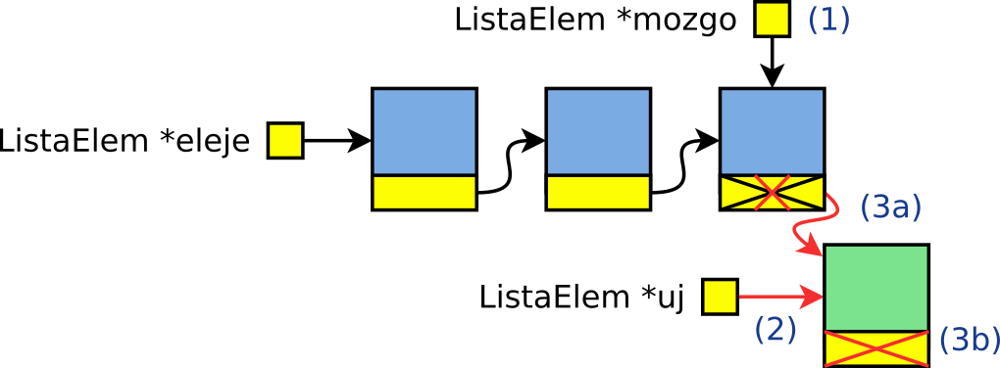ListaElem *mozgo, *uj; for (mozgo = eleje; mozgo->kov != NULL; mozgo = mozgo->kov) // 1 ; /* üres ciklus */ uj = (ListaElem*) malloc(sizeof(ListaElem)); // 2 mozgo->kov = uj; uj->kov = NULL; // 3
Hozzáfűzés a lista végéhez (append):
- lefoglaljuk az új elemet,
- megkeressük az utolsót (mivel csak az első pointere van meg),
- az utolsó elem „következő” mutatóját beállítjuk az új elem címére, az új elemét pedig NULL-ra.
A ciklus egy apró, de fontos dologban különbözik a bejárás ciklusától.
Itt a ciklusfeltétel nem mozgo != NULL, hanem mozgo->kov != NULL –
vagyis a ciklus nem az utolsó elem után áll meg, hanem még az utolsó elemnél.
Az utolsó elemet éppen arról ismerjük meg, hogy a benne lévő kov pointer
értéke NULL.
9Listaépítés – hozzáfűzés függvény
Elsőre azt gondolhatnánk, hogy ha hátulra szúrunk be, akkor az „eleje” mutató nem változik. Ez így nem igaz! Üres listában a hátulra fűzéstől változik az „eleje” mutató!
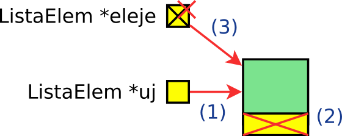eleje mutató!
ListaElem *eleje = NULL; // üres lista eleje = vegere_fuz(eleje, 2); eleje = vegere_fuz(eleje, 9);
Vagyis nem csak hogy az üres listát külön esetként kell kezelnünk (mivel
az előbb mutatott ciklust a benne lévő mozgo->kov != NULL feltétel miatt nem
futtathatjuk üres listán!), hanem a lista végére fűző függvényt ugyananúgy kell megoldanunk,
mint az elejére beszúrást. Nevezetesen, hogy vissza kell térnie ennek is az esetlegesen
megváltozott lista eleje pointerrel.
/* Új elemet helyez el a lista végén, és
* visszatér a megváltozott lista eleje mutatóval. */
ListaElem *vegere_fuz(ListaElem *eleje, int adat) {
ListaElem *uj;
uj = (ListaElem*) malloc(sizeof(ListaElem));
uj->adat = adat;
uj->kov = NULL;
if (eleje == NULL) // üres lista?
return uj;
ListaElem *mozgo;
for (mozgo = eleje; mozgo->kov != NULL; mozgo = mozgo->kov)
; /* üres ciklus */
mozgo->kov = uj;
return eleje;
}
Az új elemre mutatnia kell egy pointernek. Azonban hogy hol van ez a pointer, az a listától függően változhat:
- Ha a lista nem üres, akkor meg kell keresni az utolsó elemet. Ilyenkor annak
a
kovpointere változik meg. - Ha üres, akkor nincs utolsó elem sem. Ilyenkor a lista elejét mutató pointer kell változzon. Még egyszer: ez azáltal történik meg, hogy visszaadjuk a megváltozott pointert, és az értékadást pedig a hívó végzi el. A visszaadott pointert be kell másolni a listaeleje pointerbe!
10A lista felszabadítása
Az alábbi kódrészlet kézenfekvőnek tűnik, de hibás:
for (iter = eleje; iter != NULL; iter = iter->kov) free(iter); // hibás
Mivel az „iter” által mutatott listaelemet felszabadítjuk, a ciklusmag
után a következő elemet előszedő iter=iter->kov
utasítás már egy felszabadított területre hivatkozna.
El kell tárolni a törölt elemből a „következő” mutatót, hiszen a felszabadítás után még szükségünk van rá a továbblépéshez:
iter = eleje;
while (iter != NULL) {
ListaElem *temp = iter->kov; // következő elem
free(iter);
iter = temp;
}
eleje = NULL; // üressé vált
Így végeredményben egy iter = eleje; iter != NULL; iter = iter->kov
ciklust kapunk, de az iter->kov kifejezés kiértékelése a ciklustörzs elejére került,
eltoltuk időben a free() előttre.
11Összetett példa: mondatok generálása
mondat.c
Feladat: írjunk programot, amely véletlenszerűen generált, magyar nyelvű mondatokat ír ki!
A kutya alszik. A lassú kutya gyorsan fut.
Mit kell ehhez tenni?
- Specifikáljuk, milyen a helyes mondat!
- Döntsük el, milyen adatszerkezetben tárolhatók a mondatok!
- Adjuk meg, mely függvények rakják össze a mondatokat!
- Írjuk meg a programot.
A mondatos feladat ötlete a varázslós könyvből származik: Hal Abelson, Gerald Sussman and Julie Sussman: Structure and Interpretation of Computer Programs.
12Mondatok – adatszerkezet választása
Mondatok: eltérő hosszúságúak lehetnek, szavakból állnak.
Szavak: betűkből állnak, bármilyen hosszúak lehetnek.
A mondat legyen lista, amely szavakból áll. Így tetszőlegesen hosszú mondatok összefűzhetőek, és egyetlen pointerrel hivatkozhatóak. A szó legyen dinamikusan foglalt tömb – abban pedig a szokásos sztring.
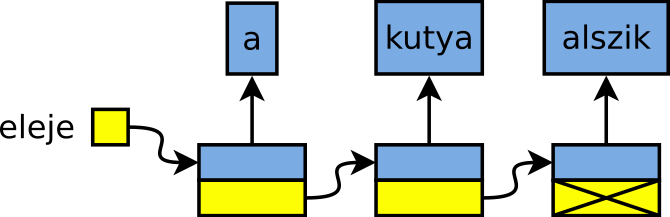
typedef struct SzoLista {
char *szo;
struct SzoLista *kov;
} SzoLista;
Karakterekből nem érdemes listát építeni, hiszen
akkor minden bájt mellé egy újabb pointert lefoglalnánk. Amúgy is, maradjunk
a sztringnél, hogy printf()-fel könnyedén ki tudjuk majd írni a szavakat!
A listaelem és a benne lévő szó is dinamikusan foglalt! Az egyszavas lista foglalásához foglalni kell listaelemet és tömböt is:
/* Egyelemű lista építése egy sztringből.
* Bemenet: egy sztring - a szó, amit lemásol.
* Visszatérési érték: az újonnan létrehozott lista. */
SzoLista *ujegyszavas(char const *szo) {
SzoLista *uj;
uj = (SzoLista*) malloc(sizeof(SzoLista));
uj->kov = NULL;
uj->szo = (char*) malloc(sizeof(char)*(strlen(szo)+1));
strcpy(uj->szo, szo);
return uj;
}
13Mondatok – EBNF megadás, lista építése
EBNF nyelvtani szabályokkal specifikáljuk a mondatot:
kijelentés = névelő, alanyi_rész, állítmányi_rész; alanyi_rész = melléknév, főnév; állítmányi_rész = határozó, ige; melléknév = "piros" | "lassú" | "álmos"; főnév = "macska" | "kutya" | "tanár" | "hallgató"; határozó = "gyorsan" | "lassan";
Példa: névelő, alanyi rész, állítmányi rész:
A vidám hallgató , .
A lista építése:
alanyi_resz = osszefuz(veletlenszo(melleknevek),
veletlenszo(fonevek));
allitmanyi_resz = osszefuz(veletlenszo(hatarozok),
veletlenszo(igek));
mondat = osszefuz(alanyi_resz, allitmanyi_resz);
A mondat kiírása:
/* kiír egy mondatot, végén ponttal. */
void kiir(SzoLista *mondat) {
SzoLista *iter = mondat;
while (iter->kov != NULL) { /* az utolsó előttiig */
printf("%s ", iter->szo);
iter = iter->kov;
}
printf("%s.\n", iter->szo); /* az utolsó */
}
A veletlenszo() a kapott szótömbből véletlenszerűen
választ egyet, és visszaad egy új listát, amelyben csak az van. Ehhez előbb meg kell
számolnia, hány szó van a tömbben (pointerek tömbje, végén NULL pointer):
Véletlenszerűen választott szó a tömbből:
/* A kapott tömbből (NULL pointer a végén) kiválaszt egy szót,
* és épít egy egyelemű listát, amelyikben az van. */
SzoLista *veletlenszo(char **szavak) {
int db;
for (db = 0; szavak[db] != NULL; ++db)
; /* üres - csak megszámolja */
if (db == 0)
return NULL;
int melyik = rand()%db;
return ujegyszavas(szavak[melyik]);
}
A fenti függvény működése egyszerű: megszámolja a
NULL pointerrel terminált tömbben lévő szavakat, utána pedig generál egy
véletlenszámot 0 és db-1 között. Végül az annyiadik szó másolatával tér vissza.
Az osszefuz() az első lista végéhez
fűzi a másodikat, és visszatér az összefűzöttel. Sem új lista, sem új listaelem nem keletkezik.
/* A két listát összefűzi, és visszaadja az így kapottat.
* Nem történik új listaelem foglalás. */
SzoLista *osszefuz(SzoLista *egyik, SzoLista *masik) {
if (egyik == NULL)
return masik;
SzoLista *futo;
for (futo = egyik; futo->kov != NULL; futo = futo->kov)
; /* üres */
futo->kov = masik;
return egyik;
}
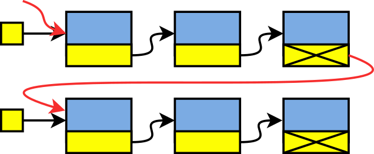
A függvény működése a következő:
- Ha az első lista üres, akkor az összefűzött lista a második lista. (Függetlenül attól, hogy az mit tartalmaz.)
- Ha nem üres, akkor meg kell keresni a legutolsó elemét, és annak
NULLértékűkovpointerét beállítani a másik lista elejére. Ezután vissza is lehet térni az előbbi lista elejére mutató pointerrel.
A függvény visszatérési értékét el kell tárolni, ugyanis az az összefűzött mondatra mutató pointer.
Mivel új listaelemek nem keletkeznek, az egyik és a másik listákat
később nem kell majd felszabadítani, csak a keletkezőt! Tulajdonképp a két bemeneti lista
megszűnik önálló életet élni, és csak az összefűzött lista fog létezni.
Törlés, rendezve építés
15Törlés listából I.
A törlés problémái nagyon hasonlóak a beszúrásnál látottakhoz: (i) ha a lista első elemét törüljük, módosítani kell az „eleje” pointert, (ii) ha középről kell törölnünk, akkor szükség van egy lemaradó pointerre a mutatók megfelelő átállításához.
Törlés lista belsejéből:
- megkeressük a törlendő elemet,
- felszabadítjuk,
- az előtte lévő
kovpointerét az utána lévőre állítjuk. ?!
Gond a 3. ponttal: amelyik elemet megtaláljuk így, az azelőtti elemet kell módosítani. Hátrafelé haladni pedig nem tudunk.
16Törlés listából II.
Ötlet: két mutatót mozgatunk végig a listán!
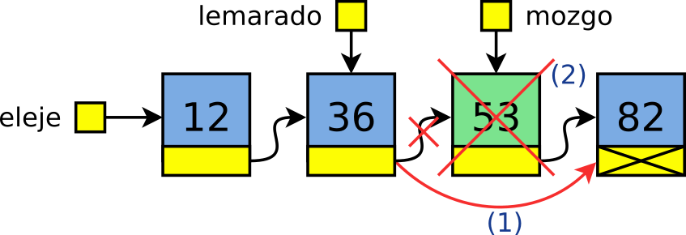(inchworm)
lemarado = NULL; mozgo = eleje;
while (mozgo != NULL && mozgo->adat != keresett) {
lemarado = mozgo; mozgo = mozgo->kov;
}
A „mozgó” pointerrel vizsgáljuk az elemek értékét, a „lemaradó” pointer mindig eggyel lemaradva követi a „mozgót”.
A ciklusban kihasználjuk a logikai rövidzárat. Akkor megyünk tovább a listában, ha nem értük el még a végét és az aktuális elem nem a keresett. Ha elértük a lista végét, akkor „mozgó” értéke NULL. Ha ilyenkor kiértékelődne az ÉS kapcsolat második fele is, akkor az hibát okozna, hiszen egy NULL pointer értékét próbálnánk megvizsgálni! Fontos tehát, hogy az ÉS kapcsolatban először vizsgáljuk meg, hogy elértünk-e a lista végére és csak utána az aktuális elem értékét!
A törlés így már egyszerű:
lemarado->kov = mozgo->kov; // törlendő = ahol megállt free(mozgo);
17Törlés listából III.
/* Adott elemet töröl. Visszatér az új eleje mutatóval. */
ListaElem *torol(ListaElem *eleje, int adat) {
ListaElem *lemarado, *mozgo;
lemarado = NULL; mozgo = eleje;
while (mozgo != NULL && mozgo->adat != adat) { // törlendő hol?
lemarado = mozgo; mozgo = mozgo->kov;
}
if (mozgo == NULL) // üres vagy nincs ilyen elem
return eleje;
if (lemarado == NULL) { // az első elemet kell törölni
ListaElem *ujeleje = mozgo->kov;
free(mozgo);
return ujeleje;
}
lemarado->kov = mozgo->kov; // a közepéről/végéről törlünk
free(mozgo);
return eleje;
}
Az elem keresése egy lemaradó pointeres bejárást használ. A ciklus után háromszoros esetszétválasztást kell végezni.
- Ha „mozgó” értéke
NULL, akkor vagy üres a lista és rögtön az első iteráció előtt kiléptünk a ciklusból az ÉS kapcsolat első tagja miatt; vagy végigértünk a listán és az utolsó elem sem egyezett meg a keresettel, tehát az nem szerepel a listában. Akármelyik is, nincs mit törölni, ezért egyből visszatérhetünk. - Ha „mozgó” értéke nem
NULL, de „lemaradó” igen, akkor az azt jelenti, hogy az első iteráció előtt kiléptünk a ciklusból azért, mert az ÉS kapcsolat második része nem teljesült, tehát rögtön az első elem megegyezett a keresettel. Ezt amozgo == elejefeltétellel is ellenőrizhetnénk. Ilyenkor az első elemre mutató pointert át kell állítani az őt követőre, majd törölni kell őt. Itt azt is írhatnánk, hogyfree(eleje). A törlés előtt egy ideiglenes változóba (ujeleje) el kell menteni a második elem címét, hiszen muszáj felszabadítani az első elemet areturnelőtt, visszaadni viszont a második elem címét kell, mert az lesz az új listafej. (Ez ugyanaz a probléma, mint amit a lista felszabadításánál már láttunk.) - Ha mindkét pointer egy létező elemre mutat, akkor a lista közepéből, vagy az utolsó elemet kell törölni. Mindkét esetben annyi a teendő, hogy a „lemaradó” által mutatott elem következő pointerét átállítjuk a „mozgó” utánira (ami akár
NULLis lehet), majd töröljük azt, amire a „mozgó” mutat. Ilyenkor az eredeti „eleje” pointerrel térünk vissza, hiszen a lista eleje nem változott meg.
18Rendezve építés I.
Gyakran van szükség arra, hogy rendezetten tároljunk adatokat.
- A tömböknél az adatok rendezett rögzítése nagyon költséges, hiszen mindig odébb kell csúsztatni a beszúrási pozíció utáni elemeket.
- Listákat könnyű rendezve építeni, hiszen csak a mutatókat kell megfelelően beállítani.
Tömbök esetén egy új elemet mindig a meglévő adatok után szúrunk be és utána rendezünk, listáknál pedig eleve rendezetten építünk és így ott nincs szükség utólagos rendezésre. Ez jó, mert az utólagos rendezés a listáknál még kevésbé hatékony, mint tömböknél.
Beszúrás egy rendezett listába:
- Az első elemre állunk a „mozgó” pointerrel.
- Amíg az aktuális elem kisebb, mint a beszúrandó, és nem értük el a lista végét, addig továbblépünk a következőre.
- A megtalált elem elé beszúrjuk az újat. Látjuk az előzőt?
A beszúrásnál a megtalált elem elé kell beszúrni: ezt a problémát is megoldhatjuk lemaradó pointerrel!
19Rendezve építés II.
A beszúrás folyamata a lemaradó pointeres keresés után: a „lemaradó” pointerét átállítjuk az új elemre, az új elem pointerét átállítjuk a „mozgó”-ra.
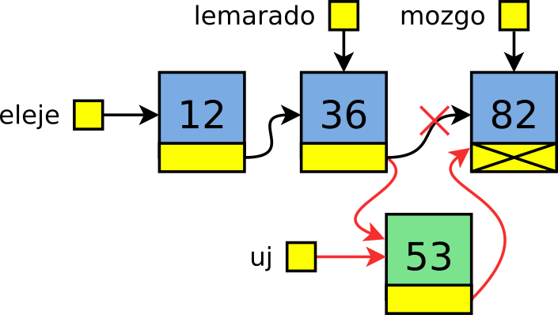
/* Rendezett listába új elemet szúr be. Visszatér az új
lista eleje mutatóval, ami változhatott. */
ListaElem *rendezve(ListaElem *eleje, int adat) {
ListaElem *uj;
uj = (ListaElem*) malloc(sizeof(ListaElem));
uj->adat = adat;
ListaElem *lemarado, *mozgo;
lemarado = NULL; mozgo = eleje;
while (mozgo != NULL && mozgo->adat < uj->adat) { // hely?
lemarado = mozgo; mozgo = mozgo->kov;
}
if (lemarado == NULL) { // üres vagy első elé?
uj->kov = eleje;
return uj;
}
lemarado->kov = uj; // lista belsejébe/végére
uj->kov = mozgo;
return eleje;
}
Az alábbi eseteket kell megkülönböztetni a keresés után.
Ha lemarado == NULL:
- vagy üres volt a lista, vagyis „mozgó” értéke
NULLvolt (tehát rögtön az első iteráció előtt kiléptünk a ciklusból az ÉS kapcsolat első tagja miatt), - vagy az első elem elé kell beszúrni, ezért az ÉS kapcsolat második tagja miatt léptünk ki az első iteráció előtt a kereső ciklusból.
Ilyenkor mindenképp az „uj” pointerrel kell visszatérni, hiszen ő lesz ezentúl a lista első eleme.
Mindkét esetben értelmes az uj->kov=eleje kifejezés, hiszen az vagy NULL, és akkor egy egyelemű listát kapunk, vagy az első elemre mutat és akkor beszúrtunk eléje egy elemet.
Ha lemarado != NULL:
- Vagy elértük a lista végét (az ÉS kapcsolat első fele miatt léptünk ki a ciklusból) – ekkor mozgo értéke NULL,
- Vagy valahová a lista közepére szúrunk be, mert az ÉS kapcsolat második fele nem teljesült, tehát megtaláltuk az első elemet, ami nagyobb, mint a beszúrandó (ekkor mozgo értéke nem
NULL).
Mindkét esetben át kell állítani a „lemaradó” által mutatott elem „következő” pointerét az új elemre. Továbbá mindkét esetben a „mozgó” lesz az új elem „következő” pointere:
- vagy egy listabeli, létező elem,
- vagy a
NULLpointer, és így az új elem lesz a lista utolsó eleme innentől kezdve.
Duplán láncolt listák
21Duplán láncolás és strázsák
A listás algoritmusok nehézségei:
- csak előrefelé tudunk menni, hátra nem,
- lista első eleme problémás,
- nem látunk visszafelé, ezért lemaradó pointer kellett.
Ötletek:
- Láncoljunk „duplán” (doubly linked list)!
- Helyezzünk el egy-egy extra elemet a lista végein (strázsa, sentinel)!
22A duplán láncolt ListaElem és Lista
A lista egy eleme így:
typedef struct ListaElem {
…
struct ListaElem *elozo, *kov;
} ListaElem;
A két strázsára mutató pointert egy struktúrába tesszük, hiszen ezek egy listához tartoznak:
typedef struct Lista {
ListaElem *elso;
ListaElem *utolso;
} Lista;
A két strázsa elem mindig a lista elején és a végén áll, tehát új elem beszúrásakor sosem fordulhat elő, hogy az első elé vagy az utolsó után kéne beszúrni. Így a beszúrás illetve törlés művelete mindig két létező elem között történik, vagyis minden pozíción ugyanazt a műveletet kell végrehajtani. Az algoritmusok sokkal egyszerűbbek, hiszen nem kell felderíteni azt, hogy milyen speciális pozíció az, ahol a műveletet el kell végezni, és nem kell elágazni eszerint. Fontos, hogy a két strázsa nem tartalmaz értelmes adatot, tehát az értelmes adatok listája az eleje („első”) strázsa utáni elemtől a vége („utolsó”) strázsa előtti elemig tart!
23Mindkét végén strázsás lista: bejárás
A listán végimenni az alább bemutatott módon lehet:
- az „első”, vagyis a kezdő strázsa utáni elemtől indulunk,
- az „utolsó”, vagyis a záró strázsa előtti elemig megyünk.
/* Kiírja a listában található számokat. */
void kiir(Lista *lista) {
ListaElem *mozgo;
for (mozgo = lista->elso->kov; // 1
mozgo != lista->utolso; // 2
mozgo = mozgo->kov)
printf("%d ", mozgo->adat);
}
A lista->elso->kov: a kezdő strázsa utáni, első hasznos elem.
Ezt már fel kell dolgozni, innen indul a ciklus. A lista->utolso
a záró strázsa elem; ezt már nem kell feldolgozni, vagyis amint a mozgo!=lista->utolso
feltétel hamis lesz, a ciklus megáll.
24Duplán láncolt lista: törlés
void torol(ListaElem *torlendo) {
torlendo->elozo->kov = torlendo->kov;
torlendo->kov->elozo = torlendo->elozo;
free(torlendo);
}
Nem kell lemaradó pointer, nem kell a végeken külön figyelni!
Ha egy adott tartalmú elemet szeretnénk törölni, akkor a teendők a következők:
- megkeressük a törlendő elemet,
- az előtte lévő elem „következő” pointerét átállítjuk az utána lévőre,
- az utána lévő „előző” pointerét átállítjuk az előtte lévőre,
- felszabadítjuk az elemet.
/* megadott adat első előfordulását törli */
void torol(Lista *lista, int adat) {
ListaElem *mozgo;
mozgo = lista->elso->kov;
while (mozgo != lista->utolso && mozgo->adat != adat) {
mozgo = mozgo->kov;
}
if (mozgo != lista->utolso) { // megvan?
mozgo->elozo->kov = mozgo->kov;
mozgo->kov->elozo = mozgo->elozo;
free(mozgo);
}
}
A törlésnél szükség van egy feltételvizsgálatra: le kell ellenőrizni, hogy a törlendő elem egyáltalán benne van-e a listában. Ha a „mozgó” pointer az „utolsó”-n áll meg a keresés során, az azt jelenti, hogy nem találta meg a törlendő elemet a listában. Ebben az esetben a függvény nem csinál semmit. A pointer ilyenkor a végstrázsára mutat, amit nem szabad törölni.
25Duplán láncolt lista: rendezve beszúrás
A duplán láncolt, strázsás listák előnye igazán akkor válik nyilvánvalóvá, amikor egy új elemet kell beszúrni.
- Csak egy pointerre van szükség: arra, amelyik elé kerül az új elem.
- A beszúrás művelete mindig azonos: a két strázsa is valódi elem.
/* új elemet szúr a rendezett listába */
void rendezve_beszur(Lista *lista, int adat) {
ListaElem *uj;
uj = (ListaElem*) malloc(sizeof(ListaElem));
uj->adat=adat;
/* Egyszerű keresés, nincs lemaradó pointer */
ListaElem *mozgo;
mozgo = lista->elso->kov;
while (mozgo != lista->utolso && mozgo->adat < adat)
mozgo = mozgo->kov;
uj->elozo = mozgo->elozo; // ő a szomszédaira mutat
uj->kov = mozgo;
mozgo->elozo->kov = uj; // a szomszédai rá
mozgo->elozo = uj;
}
A kétszeres láncolás miatt négy pointert kell helyesen beállítani:
- az új elem „előző” pointerét,
- az új elem „következő” pointerét (vagyis az új elem a szomszédaira mutat),
- az új előtti elem „következő” pointerét,
- az új utáni elem „előző” pointerét (az új elem szomszédai rá mutatnak).
A keresésnél sincsen szükség lemaradó pointerre, hiszen a
megtalált elemből elérjük az előtte lévő elemet is
(mozgo->elozo), amelyre az új elemnek mutatnia kell
(visszafelé), és amelynek az új elemre mutatnia kell (előrefelé). Ez
a művelet helyesen fut le akkor is, ha a lista üres: ilyenkor a
„mozgó” pointer a lista végét jelölő strázsa elemre („utolsó”) fog
mutatni. Ezen felül, mivel minden listaelem előtt van még egy elem
(lehet, hogy az a strázsa, de van), nincsen szükség az
esetszétválasztásra, amely külön kezelte a lista elejét és a
belsejét. Legvégül pedig, mivel az eleje strázsa mindenképpen első
elem marad, a lista elejét mutató pointer sem változik!
26Speciális listák
A várakozási sor (queue, FIFO – first in, first out) olyan lineáris adatszerkezet, amelyben új elemet az elejéhez adunk hozzá, a feldolgozandó elemeket a végéről vesszük el. Várakozási sort duplán láncolt listával érdemes megvalósítani, mert gyakori művelet az, amikor a lista végét módosítjuk.
Egyenetlen terhelések, illetve eltérő sebességű folyamatok kiegyenlítésére szokás használni ún. pufferként várakozási sorokat. Nagy terhelés esetén a kérések a sor elejéhez adódnak hozzá, a kiszolgáló pedig a végéről veszi el őket, tehát a legrébben érkezett fog a legkorábban sorra kerülni. Ilyen módon nem veszik el egy kérés sem, hiszen a lista dinamikus nő, vagy csökken attól függően, hogy éppen a "termelő" vagy a "fogyasztó" oldal dolgozik gyorsabban. Példa: egy szerverre időben egyenetlenül elosztva érkeznek be a kérések. Előfordulnak üresjáratok és olyan időszakok, amikor nem tudja olyan sebességgel kiszolgálni a kéréseket, ahogy beérkeznek. Másik példa: a nyomtatási sor a számítógépen. A kinyomtatandó oldalakat megjegyzi a gép, és olyan sorrendben küldi a nyomtatónak, ahogyan azok eredetileg a felhasználó által ki lettek nyomtatva.
A verem (stack, LIFO – last in, first out) olyan lineáris adatszerkezet, amelyben új elemet az elejéhez adunk hozzá (push), és a feldolgozandókat is az elejéről vesszük el (pop). Verem megvalósítása legegyszerűbben egyszeresen láncolt listával lehetséges, amelybe az új elemeket a lista elején tesszük, és a kivett elemek is a lista elejéről származnak.
A verem használható például matematikai kifejezések kiértékelésekor átmeneti tárolónak, és általában olyan algoritmusokban, ahol az adatok feldolgozása azok érkezésének fordított sorrendjében történik. Példa: a függvényeknél láttuk, hogy a verem alapvető adatszerkezete a memóriakezelésnek. A függvények lokális változói hasonlóan tárolódnak.
A fésűs lista egy olyan láncolt lista, amelynek elemei láncolt listák. Olyan esetben, amikor az adatok kétszintű hierarchiában helyezkednek el, érdemes fésűs listát használni – főként, ha mindkét szinten rendezett tárolást szeretnénk.
Példa: egy nyelviskola tanulói – a főlista (sárga) egy eleme egy kurzus (pl. „holland haladó”, „hindi kezdő” stb.). Minden óra tartalmaz egy listát (kék), amelynek elemei a kurzuson résztvevő hallgatók.
A ciklikus lista olyan lista, amelyben az „utolsó” elem után újból az első következik (vagyis az utolsó elem „következő” pointere az elsőre mutat).
Példák:
- Futó programok listája egy operációs rendszerben. Ha foglalkozott az utolsóval, akkor utána megint az elsővel.
- Sokszög csúcspontjai: az utolsó után az első jön, az első előtt az utolsó.
Érdekes egy ciklikus lista bejárása. Mivel nem mehetünk NULL pointerig (nincs vége a listának),
addig kell futnia a ciklusnak, amíg el nem érjük a lista elejét. Egy ilyen feltétel
azonban a lista elején is teljesülne. Ahogy leírjuk ezt, egyből észbe is kapunk:
for (iter = eleje; iter != eleje; iter = iter->kov)
Ehelyett például egy hátultesztelő ciklust alkalmazhatunk, hogy biztosítsuk, lefusson legalább egyszer a ciklustörzs, és a feltétel már a második elemet lássa elsőnek. Ekkor azonban az üres listára külön figyelnünk kell bejáráskor is:
if (eleje == NULL)
printf("üres a lista!\n");
else {
iter = eleje;
do {
…
iter = iter->next;
} while (iter != eleje);
}
27Autók a hídon – komplex példa
Feladat: programot írni, amely egy híd előtti közlekedési lámpát vezérel.
A híd teherbírása 20 tonna. Különböző súlyú járművek haladnak át rajta. A lámpát úgy kell vezérelni, hogy egy jármű csak akkor hajthasson fel, ha nem terhelődik túl a híd.
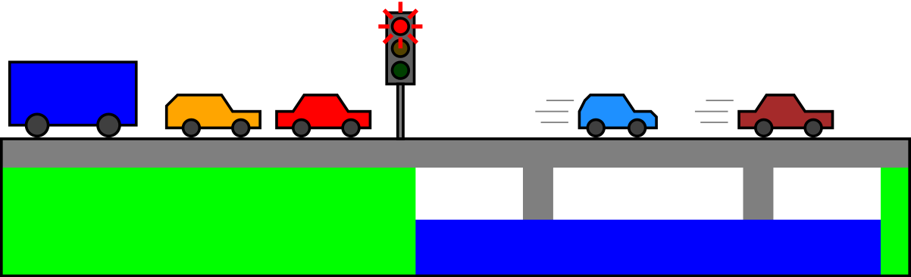Alább a program top-down megvalósításának részletei láthatóak.
28Autók a hídon – megvalósítás
Az autók sorban haladnak:
- Amelyik elsőnek hajt fel a hídra, az hajt le először.
- Amelyik elsőnek állt be a lámpához, az hajthat fel először.
A választott adatszerkezet: FIFO → duplán láncolt lista strázsákkal.
typedef struct Auto {
double tomeg;
struct Auto *elozo, *kov;
} Auto;
typedef struct Sor {
Auto *eleje,
*vege; /* strázsák */
} Sor;
Láthatóan teljesen mindegy programozási szempontból, hogy a lámpánál álló sorról vagy a hídról van szó. Mindkettő ugyanúgy várakozási sorként (FIFO) viselkedik, és ugyanazok a műveletek értelmezettek rájuk: beállni a sorba ugyanaz, mint felhajtani a hídra, és zöld jelzésre elhaladni a lámpa mellett (kiállni a sorból) ugyanaz, mint lehajtani a hídról.
Figyelni kell arra is, hogy a sor fordítva van lerajzolva: a sor eleje a rajzon a jobb szélen szerepel, a vége pedig a bal szélen. Az „előző” és „következő” pointereknél is fogalmazhatunk fordítva. Programozási szempontból mindegy, hogy a két szópár jelentését megfordítjuk-e, mert ugyanazt az eredményt kapjuk. Lényeg, hogy a sor egyik végére tegyük az „új” autókat, és másik végéről vegyük el a „feldolgozattakat.”
Ha egy autó várakozik, és szabaddá válik az út, akkor felhajt a hídra:
if (!ures(varakozok)) { /* van várakozó autó? */
if (mehet_e(sor->eleje->kov, hidon)) { /* elbírja? */
Auto *a = elejerol(sor); /* sorból kivesz */
vegere(hid, a); /* hídra (sorba) betesz */
}
}
vegere(): egy autó sorba állítása
void vegere(Sor *s, Auto *a) {
a->elozo = s->vege->elozo;
a->kov = s->vege;
s->vege->elozo->kov = a;
s->vege->elozo = a;
}
elejerol(): sorra kerülő autó
Auto *elejerol(Sor *s) {
Auto *a = s->eleje->kov;
a->kov->elozo = a->elozo;
a->elozo->kov = a->kov;
return a;
}
mehet_e(): megmondja, hogy egy adott autó felhajthat-e a hídra. Igazzal tér vissza, ha még elbírja
(ilyenkor lehet zöld a lámpa).
int mehet_e(Auto *a, Sor *hidon) {
return sor_ossztomeg(hidon) + a->tomeg < 20000; /* 20 t */
}
sor_ossztomeg(): összeadja egy sor autóinak tömegét. A híd
terhelésének számítására használható.
double sor_ossztomeg(Sor *sor) {
Auto *iter;
double ossz = 0;
for (iter = sor->eleje->kov; iter != sor->vege; iter = iter->kov)
ossz += iter->tomeg;
return ossz;
}
29Tűzijáték – komplex példa
tuzijatek.c
Feladat: írjunk programot, amely tűzijátékot rajzol ki!
Fizika: egy kilőtt lövedék mozgása Δt idő alatt:
- Helyzete: r = r + vΔt
- Sebessége: v = v + gΔt
A robbanáskor sok apró darab keletkezik, azok ugyanígy mozognak.
Milyen adatszerkezetben tároljuk a rengeteg pontot? A pontok sorrendje nem számít, a számuk viszont nagyon gyorsan változik. Legyen ezért lista! Az új elemeket tetszőleges helyre tehetjük beszúráskor, akár az aktuális elem elé, akár az aktuális elem mögé – ugyanúgy fog kinézni a mozgás. Bejáráskor figyelni kell majd: a lista bejárása közben kell majd hozzáadnunk új elemeket (robbanáskor) és törölni régieket!
typedef enum Tipus { robbano, eltuno } Tipus;
typedef struct Pont {
Tipus tipus;
double x, y, vx, vy;
double elettartam;
int szin;
struct Pont *kov;
} Pont;
30Tűzijáték – pontok kezelése (kódrészlet)
A top-down megvalósítás gondolatmenete, kódrészletei láthatók alább. Az egyes pontokat kezelő ciklus vázlatosan így néz ki:
lemarado = lista;
iter = lista->kov; /* strázsát kihagy */
while (iter != NULL) {
iter->elettartam -= delta_t;
if (iter->elettartam > 0) { // még repülhet?
iter->x += iter->vx*delta_t; /* fizika: helyzet + sebesség */
iter->y += iter->vy*delta_t;
iter->vy += g*delta_t;
lemarado = iter;
kovetkezo = iter->kov;
} else { // vége
if (iter->tipus == robbano)
for (i = 0; i < 30; i++) /* 30 darabra robban */
beszur(iter, uj_eltuno(iter->x, iter->y, iter->szin));
kovetkezo = iter->kov; /* ez a ciklushoz kell */
lemarado->kov = iter->kov;
free(iter); /* törlés */
}
iter = kovetkezo;
}
Ez feldolgozza a pontok listájának minden elemét:
- Ha lejárt az ideje, felrobbanhat. De mindenképpen eltűnik.
- Ha még nem, akkor mozog a ferde hajítás képlete szerint.
A beszúráskor az aktuális elem után szúrjuk be az új pontokat (így, a ciklus folytatva, egyből fel is dolgozzuk majd őket). Ez azért egyszerűbb így, mivel könnyebb az aktuális elem után beszúrni, mint elé:
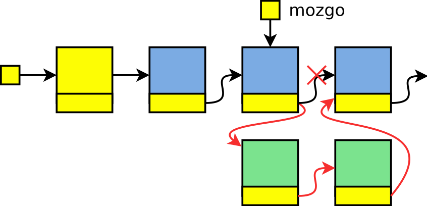A törléshez pedig nyilvántartunk egy „lemaradó” pointert. Mivel az aktuális
elem (iter) törölhető, ezért a ciklus nem végződhet iter=iter->kov
sorral – a törlés előtt a kov pointert ki kell menteni a törölt elemből:
Figyelni kell a „lemaradó” pointerre is. Ha nem töröljük az aktuális elemet, akkor a következő iterációban a „lemaradó” pointer arra kell mutasson. Ha viszont töröljük, akkor a „lemaradó” pointer értéke nem változik, a következő iterációban még mindig a törölt elem előttire kell mutasson. A felépített lista elején strázsa van, hogy ne kelljen még a lista eleje miatt is külön esetszétválasztást csinálni.
uj_eltuno(): új pontot hoz létre, amely eltűnik, nem pedig robban.
Pont *uj_eltuno(double x, double y, int szin) {
Pont *uj;
uj = uj_pont(x, y, rand()%60 - 30, rand()%60 - 30);
uj->elettartam = 3 + rand()%10/10.0;
uj->tipus = eltuno;
uj->szin = szin;
return uj;
}
Ez a függvény pedig új pontot hoz létre, amely egy robbanáskor keletkezik.
Az élettartama és a sebessége véletlenszám. A struktúrában szereplő kov pointert az
uj_pont() függvény NULL-ra állítja csak; az később kap értéket, a
listába befűzés során.
beszur(): beszúrja a „mit” elemet a „miután” elemet követően.
void beszur(Pont *miutan, Pont *mit) {
mit->kov = miutan->kov;
miutan->kov = mit;
}
A fenti függvény az első paraméterében adott listaelem után fűzi a második paraméterében adott listaelemet. Nem tér vissza semmivel, hiszen ezáltal a lista eleje (ami amúgy is strázsás) nem változik.